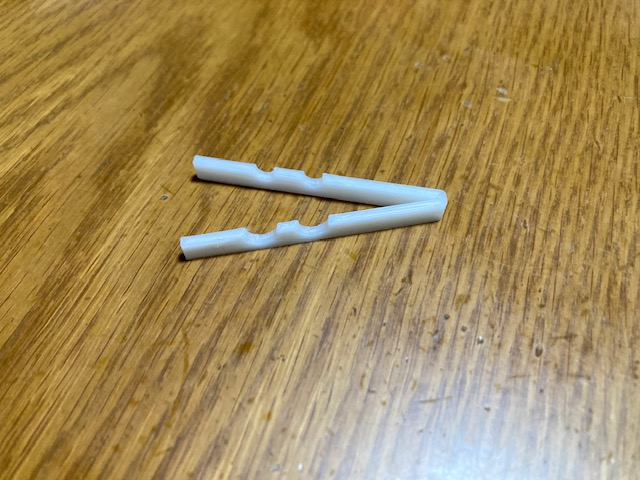

初めに
私たちの班は、町中の人が使っているかばんの種類とそれぞれの数について、
みなとみらいキャンパスから目的地までの道中を移動しながらの観察、
そしてその後の定めた地点での観察という、2つのパターンで観察をしました。
観察をした日にちは10月21日（火）です。
道中の観察は午後2時頃、定点での観察はそれから約30分行いました。
天気は曇りでした。
目的地は、オーケー みなとみらい店です。
定めた地点は、この店の入り口付近です。
ルートはこの通りです↓

入口付近はこのような景色でした。

目の前に交差点があり、たくさんの人が行き交うためその分観察ができました。
移動観察の結果
神奈川大学みなとみらいキャンパスから、オーケー みなとみらい店入口まで、観察できたかばんの種類と数の結果です。
- 肩掛け：36
- リュック：30
- トートバッグ：30
- ウェストポーチ：12
- ビジネスバッグ：7
- キャリーケース：3
肩掛けとトートバッグを区別しているのは、その時肩にかけていたか手で持っていたかの違いなだけです。
円グラフにすると

道中では肩掛けカバンが1番多く、次にリュックとトートバッグは同じで、あとはその他という結果になりました。
リュックが1番多くなるだろうと予想していましたが、意外にも肩掛けバッグが多かったです。
なぜなのか動画を見返したり思い返したりしましたが、女性はリュックよりも肩掛けのカバンを使っている人が多く、
そして途中にアンパンマンミュージアムがあったので、
そこに遊びに来ている親子連れが多く使っていたためなのではないかと思いました。
定点観察の結果
オーケー みなとみらい店の入り口付近での結果です。
- リュック：58
- 肩掛け：46
- トートバッグ：41
- ウェストポーチ：12
- ビジネスバッグ：4
- キャリーケース：3
グラフで見ると

定点においては、こちらでは予想通りリュックを多く見ることができました。
そのままオーケーに入っていく人が多かったので、そのため買った荷物を収納しやすいリュックが多かったのだと考えました。
それでも肩掛けとトートバッグもたくさん観察できたので、個人の好みなのかなと思いました。
まとめ、振り返り
リュック、肩掛け、トートバッグは安定してたくさんの人が使っていました。
特にリュックは両手を自由に使うことができ収納もしやすいことから、使用者が多いのは当たり前だと思いました。
道中と定点、両方で少なかったウェストポーチ以下のものですが、
まずウェストポーチについては、そもそも人気があまりないのかと考えました。
なぜならリュックなどの方が大きめの荷物も収納しやすく、シンプルに使いやすいと思うからです。
また、使っている人の年齢が高い傾向にありました。
若い人はファッション的にも、リュックやトートバッグを使っている人が多いと個人的には考えています。
そうなると若い人をカウントすることがなくなるので、年齢が高い傾向がみられたのかとおもいました。
ビジネスバッグ、キャリーケースについては、日時と場所も相まって、当たり前かもしれませんが少ない結果になりました。
今回観察したオーケーはスーパーであることから、レジ袋やエコバッグをカウントした方がもっと数えられたので、
それらを観察した方が良かったなと振り返ってみて思いました。